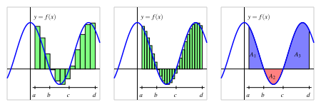

Marginal Distributions and “Marginalizing Out” A Variable
My last writeup was focused on how to get started on Problem 1 of your Lab 5 Assignment, so in this one we will focus on how to do the parts towards the end of this problem: namely, figuring out what marginal distributions are, and what it means to “marginalize out” a variable, to go from some joint pdf \(f_{X,Y}(x,y)\) to a marginal pdf \(f_X(x)\) (by “marginalizing out” the variable \(Y\)) or \(f_Y(y)\) (by “marginalizing out” the variable \(X\)).
Marginalization In Discrete World
Marginalization provides an example of where, unlike the case for some topics in the course, having a good intuition for the discrete case will actually help us a ton even when considering the continuous case. So, let’s start out by thinking through a joint discrete distribution, and thinking about what a marginal distribution derived from this joint discrete distribution actually represents.
Consider a case where we are the principal at a “senior high school” (in the US, this means a high school/secondary school that students attend for grades 10, 11, and 12), where each student is in some grade but also has an honor student status which is 1 if the student is an honor student and 0 otherwise. We can represent the discrete frequency distribution (not that it is not a probability distribution, since the numbers in each “bin” are not between 0 and 1) using the following raw frequency table:
| \(H = 0\) | \(H = 1\) | |
|---|---|---|
| \(G = 10\) | 10 | 5 |
| \(G = 11\) | 6 | 4 |
| \(G = 12\) | 7 | 1 |
So far, we can’t use this table for much of anything, since it doesn’t contain probabilities and we also don’t (yet) know the total number of students, so that we don’t know what proportions of all students fall into each bin.
So now let’s say someone asks us the probability that, if we randomly select a student from the school (at uniform), the randomly-selected student will be an honor student in 11th grade.
By thinking about what specifically they’re asking for here, we can see that they’re asking us a question about the joint distribution of \(G\) and \(H\) at the school: specifically, they’re asking us for \(\Pr(G = 11, H = 1)\), a question we can answer if we know the joint distribution \(f_{G,H}(v_G, v_H)\).
Using our naïve definition of probability, we can compute this probability using the frequencies in the table as
\[ \Pr(G = 11, H = 1) = \frac{\#(G = 11, H = 1)}{\#\text{ Students Total}} \]
and, plugging in the values from the above table, we obtain the answer
\[ \Pr(G = 11, H = 1) = \frac{4}{33} \approx 0.121 \]
Following the same logic for all remaining cells in the table, we can convert our frequency table into a probability table by normalizing the counts to be proportions of the total. But, let’s think about two different ways we could compute the total number of students, since we’ll need to think about these two ways later on:
Computing Overall Total by Column (Honors-Status Totals)
Starting from our original frequency table:
| \(H = 0\) | \(H = 1\) | |
|---|---|---|
| \(G = 10\) | 10 | 5 |
| \(G = 11\) | 6 | 4 |
| \(G = 12\) | 7 | 1 |
We could start computing the total number of students by summing columns, to obtain:
| \(H = 0\) | \(H = 1\) | |
|---|---|---|
| \(G = 10\) | 10 | 5 |
| \(G = 11\) | 6 | 4 |
| \(G = 12\) | 7 | 1 |
| Total | 23 | 10 |
And then we could total these two numbers in the totals row to obtain the overall total:
| \(H = 0\) | \(H = 1\) | Total | |
|---|---|---|---|
| \(G = 10\) | 10 | 5 | |
| \(G = 11\) | 6 | 4 | |
| \(G = 12\) | 7 | 1 | |
| Total | 23 | 10 | 33 |
Computing Overall Total by Row (Grade)
As an alternative to starting our computation of the overall totals by summing columns, we could start by summing rows.
Starting from our original frequency table:
| \(H = 0\) | \(H = 1\) | |
|---|---|---|
| \(G = 10\) | 10 | 5 |
| \(G = 11\) | 6 | 4 |
| \(G = 12\) | 7 | 1 |
We could first sum each row, to obtain:
| \(H = 0\) | \(H = 1\) | Total | |
|---|---|---|---|
| \(G = 10\) | 10 | 5 | 15 |
| \(G = 11\) | 6 | 4 | 10 |
| \(G = 12\) | 7 | 1 | 8 |
And then we could total the three partial sums in the totals column to obtain the overall total:
| \(H = 0\) | \(H = 1\) | Total | |
|---|---|---|---|
| \(G = 10\) | 10 | 5 | 15 |
| \(G = 11\) | 6 | 4 | 10 |
| \(G = 12\) | 7 | 1 | 8 |
| Total | 33 |
Bringing Both Methods Together
Notice how we obtained the same overall total, the total number of students, regardless of which dimension we chose to sum over first. So, let’s make a complete frequency table, where we have not only the frequencies of each bin but also the row totals, column totals, and a cell in the bottom-right representing the overall total:
| \(H = 0\) | \(H = 1\) | Total | |
|---|---|---|---|
| \(G = 10\) | 10 | 5 | 15 |
| \(G = 11\) | 6 | 4 | 10 |
| \(G = 12\) | 7 | 1 | 8 |
| Total | 23 | 10 | 33 |
Converting Frequencies into Probabilities
Now, before we think about the totals row/column, let’s use the overall total (33) to convert our counts into probabilities:
| \(H = 0\) | \(H = 1\) | Total | |
|---|---|---|---|
| \(G = 10\) | \(\frac{10}{33}\) | \(\frac{5}{33}\) | \(\frac{15}{33}\) |
| \(G = 11\) | \(\frac{6}{33}\) | \(\frac{4}{33}\) | \(\frac{10}{33}\) |
| \(G = 12\) | \(\frac{7}{33}\) | \(\frac{1}{33}\) | \(\frac{8}{33}\) |
| Total | \(\frac{23}{33}\) | \(\frac{10}{33}\) | \(\frac{33}{33}\) |
More Than One Distribution Can Be Derived From This Table!
Now that we see the normalized counts, we can see the different ways we can look at this table to obtain probability distributions:
- First, there’s the distribution we were originally thinking about: the entries in each non-total cell form a probabiltiy distribution called the joint distribution of \(G\) and \(H\), since each entry is between 0 and 1 and the entries sum to 1:
\[ \begin{align*} &\underbrace{\Pr(G = 10, H = 0)}_{10 / 33} + \underbrace{\Pr(G = 10, H = 1)}_{5 / 33} + \\ &\underbrace{\Pr(G = 11, H = 0)}_{6 / 33} + \underbrace{\Pr(G = 11, H = 1)}_{4 / 33} + \\ &\underbrace{\Pr(G = 12, H = 0)}_{7 / 33} + \underbrace{\Pr(G = 12, H = 1)}_{1 / 33} = 1 \end{align*} \]
- But, we can also notice that the two entries in the totals row (excluding the overall total) form a probability distribution, called the marginal distribution of \(H\):
\[ \begin{align*} \underbrace{\Pr(H = 0)}_{23 / 33} + \underbrace{\Pr(H = 1)}_{10 / 33} = 1 \end{align*} \]
- And, the three entries in the totals column (excluding the overall total) form a probability distribution, called the marginal distribution of \(G\):
\[ \underbrace{\Pr(G = 10)}_{15 / 33} + \underbrace{\Pr(G = 11)}_{10 / 33} + \underbrace{\Pr(G = 12)}_{8 / 33} = 1 \]
Let’s consider in a little more detail how we used the joint distribution—the full set of entries in the original table—to derive two different marginal distributions:
Summing the values in each column:
When we summed up the values in each column, we were summing up all possible pdf values \(f_{G,H}(v_G, v_H)\) where \(v_H = 0\) and then all possible pdf values \(f_{G,H}(v_G, v_H)\) where \(v_H = 1\). This gave us two new counts (or probabilities, if used the probability table rather than the frequency table) representing the marginal distribution of \(H\), a distribution where the variable \(G\) no longer appeared!
Summing the values in each row:
When we instead summed the values in each row, we summed all possible pdf values \(f_{G,H}(v_G, v_H)\) where \(v_G = 10\), then all possible pdf values \(f_{G,H}(v_G, v_H)\) where \(v_G = 11\), and finally all possible pdf values \(f_{G,H}(v_G, v_H)\) where \(v_G = 12\). This gave us three new counts/probabilities representing the marginal distribution of \(G\), a distribution where the variable \(H\) no longer appeared!
What’s Missing? Conditional Distributions
So far we’ve discussed the interrelationship between joint distributions and marginal distributions: the latter was obtained from the former by summing.
However, there is one type of distribution that is mentioned on your Lab assignment that we haven’t seen yet. The conditional distribution is a bit different from the joint and marginal distributions, in the sense that the conditional distribution does not represent a sum across some dimension of the table but a slice of the table: that is, it represents the new distribution which “pops out” when we consider one particular row or one particular column of the table.
However, just like how above we figured out the marginal distributions by summing over columns and summing over rows separately, and seeing what resulted, let’s explore what conditional distributions look like by slicing the table by column first, then slicing the table by row:
Computing Conditional Distributions as Columns (Honors-Status Values)
Let’s consider what the table would look like if we just selected a single column: for example, let’s select just the column of values for which \(H = 1\). Throwing away all of the other columns in the table, this would give us a one-column table that looks like:
| \(H = 1\) | |
|---|---|
| \(G = 10\) | 5 |
| \(G = 11\) | 4 |
| \(G = 12\) | 1 |
| Total | 10 |
Now notice that, just like how we were able to convert our frequency table into a probability table representing joint probabilities by dividing each of these values by 33 (the overall total of students across all possible grades and honors-status values), now we can convert this slice of the full table into its own distribution by dividing each of these individual values in the \(H = 1\) column by the total number of students in the \(H = 1\) column:
| \(H = 1\) | |
|---|---|
| \(G = 10\) | \(\frac{5}{10}\) |
| \(G = 11\) | \(\frac{4}{10}\) |
| \(G = 12\) | \(\frac{1}{10}\) |
| Total | \(\frac{10}{10}\) |
Notice how, unlike in the above two cases, we now have to interpret the numeric value of the probabilities in each cell differently:
- Joint and marginal distributions represented some count relative to the total number of students in the school, hence the denominator of all probabilities in either of these cases was 33
- Conditional distributions, however, represent a count relative to the number of students within the category we are conditioning on: the denominator is now 10 in each case, since we’re considering the number of students represented by each cell within the column as a proportion of the total number of students across the entire column.
Discrete World Summary
So, as long as we notice that conditional distributions are weird in the sense that they require us to renormalize all of our probabilities from our table of joint and marginal distributions, we now have the link between all three types of distributions that get talked about when working with multivariate probability distributions:
- A single joint distribution: The normalized counts in each cell of the full 2D table; in other words, the probability that a randomly-selected student from across the entire school will be in a particular bin (when students are binned by grade and honors status).
- For example, the bin in the upper-left corner of our original table represents non-honors students in 10th grade (\(G = 10, H = 0\)).
- Two marginal distributions: The normalized totals across each row, or across each column, of the full 2D table; in other words, the probability that a randomly-selected student from across the entire school will be in a particular aggregated bin.
- If we aggregated by summing columns, for example, our first aggregated bin represents all non-honors students, students for whom \(H = 0\) (regardless of grade), and our second aggregated bin contains all honors students, students for whom \(H = 1\) (regardless of grade).
- Six possible conditional distributions: The re-normalized counts within a particular column or a particular row; in other words, the probability that a randomly-selected student from a particular category (the category we’re conditioning on) will be in one of the bins represented by individual slots within this row/column.
- If we conditioned on the \(H = 1\) column, for example, then once we renormalize the counts in this column, the first entry represents the probability of a randomly-selected honors student being in grade 10: \(\Pr(G = 10 \mid H = 1)\)
Notice, lastly, how we could use this intuition built from frequency tables to figure out how to go in opposite directions from the directions we derived things above: for example, if we were only given marginal distributions and conditional distributions, we could use this information to derive the full-on joint distribution table. Since we know the definition of conditional probability for example, that
\[ \Pr(B \mid A) = \frac{\Pr(B, A)}{\Pr(A)}, \]
we could re-arrange terms in this equality to obtain
\[ \Pr(B, A) = \Pr(B \mid A)\Pr(A), \]
from which we can see that if we know the conditional distribution \(\Pr(B \mid A)\) and the marginal distribution \(\Pr(A)\), we can combine these (via multiplication) to obtain the joint distribution \(\Pr(B,A)\).
Moving to Continuous World
The reason I’ve spent so much time focusing on the discrete case here is because the intuitions we just built do indeed translate naturally into good intuitions for reasoning about continuous distributions!
Taking our discrete table, for example, we can imagine moving into continuous space the same way that we learned how to take discrete rectangles approximating the the space underneath a curve and convert them into integrals: by taking the limit of the area of these rectangles as they got skinnier and skinnier:

In the above figure, we see how we can imagine summing the area of rectangles approximating the area “under” the curve (really, between the curve and the \(x\)-axis), then imagine the rectangles becoming skinnier and skinnier such that the sum of the rectangles’ areas converges to the integral of the function.
Similarly, now imagine taking the above table and continuizing our variables: imagine that instead of a student’s progress in school being recorded by a discrete random variable \(G\) such that \(\mathcal{R}_G = \{10, 11, 12\}\), now we record a student’s progress using a continuous random variable \(G\) such that \(\mathcal{R}_G = [10,12] \subset \mathbb{R}\).
By the same logic, rather than tracking each student’s honor status using a discrete random variable \(H\) such that \(\mathcal{R}_H = \{0, 1\}\), now we keep track of a student’s honor status using a continuous random variable \(H\) such that \(\mathcal{R}_H = [0, 1] \subset \mathbb{R}\).
In this new continuous world, therefore, we might say that a student near the beginning of 10th grade who is towards the “high end” of the “honors spectrum” might be represented by a pair of values \(G = 10.03\) and \(H = 0.95\), for example.
However, in this case we can still derive all of the distributions from other distributions in the same way, by:
- Replacing the sums we computed above with integrals, and
- Replacing the operation of re-normalization (which we performed to ensure that our probability mass values summed to 1) with the operation of ensuring that our probability density values integrate to 1.
So, for example, now rather than being given a frequency table, we may just be given the information that students’ \(G\) values are distributed according to the continuous uniform distribution, \(G \sim \mathcal{U}(10, 12)\), that their \(H\) values are distributed according to the truncated normal distribution \(\mathcal{TN}(\mu = 0.5, \sigma = 0.1, a = 0, b = 1)\)1, and that these two variables are independent, which means that \(\Pr(G \mid H) = \Pr(G)\) and \(\Pr(H \mid G) = \Pr(H)\) (the conditional distributions are the marginal distributions).
In this case, then, we know (by the definition of independence) that we can obtain the joint pdf \(f_{G,H}(v_G, v_H)\) by just multiplying the pdf of the marginal distribution of \(G\), \(f_G(v_G)\) and the pdf of the marginal distribution of \(H\), \(f_H(v_H)\):
\[ f_{G,H}(v_G, v_H) = f_G(v_G) \cdot f_H(v_H). \]
Since we know that \(G\) has a continuous uniform distribution, \(G \sim \mathcal{U}(10,12)\), we know (or we could look up) that \(G\) has pdf
\[ f_G(v_G) = \frac{1}{12 - 10} = \frac{1}{2}. \]
Since we know that \(H\) has a truncated normal distribution, \(H \sim \mathcal{TN}(0.5, 0.1, 0, 1)\), we know (or we could look up) that \(H\) has the pdf
\[ f_H(v_H) = \frac{1}{\sigma}\frac{\varphi(\frac{v_H-\mu}{\sigma})}{\Phi(\frac{b-\mu}{\sigma}) - \Phi(\frac{a - \mu}{\sigma})}, \]
where \(\varphi\) is the pdf of the standard normal distribution \(\mathcal{N}(0,1)\) and \(\Phi\) is the CDF of the standard normal distribution \(\mathcal{N}(0,1)\) (note the consistent usage of lowercase letters to describe pdfs and capital letters to describe CDFs, even in Greek!).
Therefore, given the independence condition, we can obtain the joint pdf \(f_{G,H}(v_G, v_H)\) by just multiplying these pdfs:
\[ f_{G,H}(v_G, v_H) = \frac{1}{2\sigma}\frac{\varphi(\frac{v_H-\mu}{\sigma})}{\Phi(\frac{b-\mu}{\sigma}) - \Phi(\frac{a - \mu}{\sigma})}. \]
And, given this joint pdf, we can integrate wherever we took sums in the discrete case to obtain the marginal pdfs:
\[ f_G(v_G) = \int_{0}^{1}f_{G,H}(v_G,v_H)dv_H \]
or
\[ f_H(v_H) = \int_{10}^{12}f_{G,H}(v_G, v_H)dv_G \]
And we can compute conditional pdfs by renormalizing so that the denominator is no longer the integral of the distribution over all its possible values (hence just the number \(1\)) but a ratio of joint distribution to marginal distribution values like the following:
\[ f_{H \mid G}(v_H | v_G) = \frac{f_{G,H}(v_G, v_H)}{f_G(v_G)}. \]
So, while the continuous case does have scarier math than the discrete case, I hope that rather than “lingering” in the continuous world, trying to churn through the meaning of the above equations on their own, you can instead try to link the continuous equations back to their simpler discrete forms given in the previous section, then just convert sums to integrals to complete the picture. That way, you never have to just stare at an integral-filled equation again.
For example, given two continuous variables with confusing-looking pdfs or CDFs, start by discretizing (“binning”) the possible values of these continuous values, to obtain a discrete distribution, and build up your intuitions about the relationships between the variables in discrete world.
In the previous case, for example, if you were asked to start with the continuous version where \(G\) ranges continuously across \([10,12]\) and \(H\) ranges continuously across \([0,1]\), you could start by discretizing these continuous distributions to obtain a table very similar to the table presented at the very beginning of this writeup: if you split the range \([10,12]\) into three bins of equal length, and the range \([0,1]\) into two bins of equal length, you can start by sampling (say) 1000 \(G\) and \(H\) values using code, sorting these 1000 samples into these equal-length bins, and reasoning through what the joint/marginal/conditional distributions of this binned distribution look like, before moving back over into continuous world to complete the various portions of the problem…
Footnotes
This may look scary, but \(\mathcal{TN}(\mu, \sigma, a, b)\) just says: start by sampling a value \(x\) from the normal distribution \(\mathcal{N}(\mu, \sigma)\), but then: if \(x < a\) transform this value to just be \(a\), and if \(x > b\) then transform this value to just be \(b\). In other words, if \(x \sim \mathcal{N}(\mu, \sigma)\), we can obtain a truncated-normal-distributed variable \(x'\) from the normally-distributed variable \(x\) as \(x' = \begin{cases}x &\text{if }a < x < b \\a &\text{if }x < a \\ b &\text{if }x > b\end{cases}\)↩︎